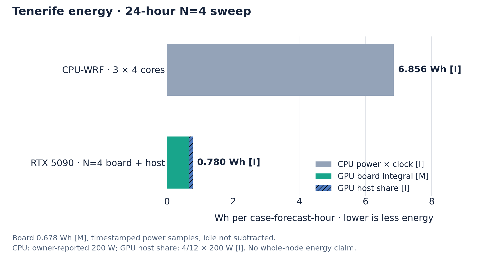

Performance, memory and energy
All speed and energy numbers on this page were measured with v0.3.2 on one NVIDIA RTX 5090 with an AMD Ryzen 9 9950X host. Later releases added WRF corrections and many physics options but have not been re-benchmarked end to end yet; other GPUs and hosts have not been measured.
GPU times are the complete process: start-up, loading of compiled programs, the forecast and writing every output file. The CPU-WRF reference counts only WRF's main loop. In the charts, [M] marks measured values and [I] estimates.
One regional forecast¶

A 24-hour, two-domain Canary Islands forecast (9/3 km), with compiled programs already cached, took 79.3 seconds in total, 3.3 s per forecast hour. Original CPU-WRF on twelve cores needs 92.3 s per forecast hour for its main loop alone: about 28 times longer. The host was busy with other work during the run, so this is a conservative number. Steady stepping alone took 2.6 s per forecast hour, and start-up about 15 seconds.
Measurement report: exact cases, clocks and raw timings.
Several forecasts on one GPU¶

Four three-domain Tenerife forecasts (9/3/1 km, 24 hours each) shared one GPU and averaged 5.5 s per case-hour, 22 times the throughput of CPU-WRF running three cases on four cores each (123.4 s per case-hour). While all four were running, the rate was 4.9 s per case-hour. Running more cases at once raises total throughput but can make each single forecast take longer.
Energy¶

For the same four forecasts the GPU board used 0.68 Wh per case-hour, measured from timestamped power samples; adding an estimated 67 W host share gives about 0.78 Wh. The twelve-core CPU-WRF run is estimated at about 6.9 Wh per case-hour, assuming 200 W. No whole-machine power meter was used, so these are board and estimated host figures, not wall-socket measurements.
Larger GPUs (estimates)¶
The scaling method extrapolates the measured RTX 5090 rates to H100, B200 and B300 cards from their memory bandwidth and capacity. These are best-case estimates: no forecast has been run on those cards. Runs across several GPUs are possible but experimental, and their speed has not been measured (several GPUs).
The first run compiles¶
The first run of a new grid, physics selection or version compiles the model for your GPU, which can take several minutes and more host memory than the forecast itself. Compile a new set-up once on its own before starting several such forecasts in parallel.
Reuse compatible executables¶
Later runs with the same grid, physics and version load the compiled program from the cache and start within seconds to a minute. A cache is only reused when it matches exactly; a cache copied from a different set-up is refused and the model compiles again, which is safe.
Running several cases¶
scripts/run_parallel_cases.sh --out-root runs/batch CASE_A CASE_B -- \
--domains-from-namelist --hours 24The launcher checks GPU and host memory, starts as many cases as fit and queues the rest. In the v0.3.2 benchmark each Tenerife case used about 5 GB of GPU memory and 5.6 GB of host memory; other grids and physics need different amounts.
Precision with original-WRF evidence¶
Like WRF's standard build, wrf_gpu computes in single precision and uses double precision only where WRF does. This matters on consumer GPUs, which compute double precision up to 64 times more slowly. The comparisons with CPU-WRF on the validation page use this default precision.
GPU memory checks¶
Before a forecast starts, the free GPU memory is compared with what the run needs: first an explicit
GPUWRF_MIN_FREE_VRAM_GIB if you set one, then a plan measured for this grid and settings,
and otherwise a cautious default of max(24 GiB, 0.50 × total VRAM). Explicit JAX
allocator settings always win. See environment variables.